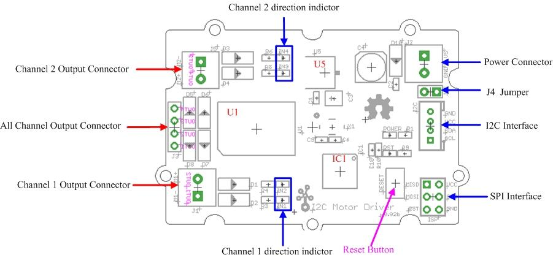

The Grove-I2C motor driver is a new addition to the TWIG series with the same easy-to-use interface. Its heart is a dual channel H-bridge driver chip that can handle current up to 2A per channel, controlled by an Atmel ATmega8L which handles the I2C communication with for example an Arduino. Both motors can be driven simultaneously while set to a different speed and direction. It can power two brushed DC motors or one 4-wire two-phase stepper motor. It requires a 6V to 15V power supply to power the motor and has an onboard 5V voltage regulator which can power the I2C bus (selectable by jumper). All driver lines are diode protected from back EMF.
The easy software interface is not the only easy-to-use feature because the TWIG I2C motor driver is designed to get you up and running in no time. It features an LED for power and four LEDs to indicate which direction each motor is running. Screw terminals facilitate motor and power connections, and the GROVE system plug and I2C interface enables you to daisy-chain the driver with many other devices.
Model: ROB72212P
| Item | Min | Typical | Max | Unit |
|---|---|---|---|---|
| Working Voltage | 6 | - | 15 | VDC |
| Max Output Current per channel | 0.7 | A | ||
| Input/output voltage on I2C bus | 5 | V | ||
| Communication protocol | I2C | / | ||

U5: AMS1117 IC,5v voltage regulator
U1: L298 IC,dual full bridge driver
IC1: Atmega8 IC, Control Motor Rotate.
NOTE: Input voltage on screw terminals is regulated to 5v and connected to I2C +5v via a jumper (J4). Remove jumper if both external power via the screw terminals and power via the I2C header is used. Use jumper if 5v should be supplied to the I2C bus.
This motor driver can be used to drive any brushed electronic motor as long as it doesn't consume more than 2A at 5v. Two motors can be driven simultaneously while set to a different speed and direction. The speed can be set fully proportional and is controlled by the ATmega8 on the board using PWM. It is set by I2C commands sent from e.g. an Arduino. It is perfect for applications like robots, homebuilt RC cars, case fans, high power LED illumination or any other project that involves proportional load control.
The I2C Motor Driver can control motor which is based on the chip L298. The L298 isn’t just a dual motor driver, it is a dual H-bridge. An h-bridge is basically a specific setup of transistors that allow you to switch direction of current. So hooked up to a motor, which means you can have it spin in both directions, and with PWM input, you can use your Arduino to make them spin at any speed. Because the L298 has 2 H-bridges, you can not only make a robot go forwards and backwards, but also turn around by having each wheel spin in a different direction.
Now, let's use the I2C Motor Driver to control two DC motors rotating in the positive or opposite direction.
(图片)
Note:
The below is an example program to be used with an Arduino. The code for this is very basic. We created a function for you that makes controlling the L298 from your Arduino easier, but you can also change it up and do it your own way.
/*
Grove- i2C motor driver demo v1.0
by: http://www.seeedstudio.com
*/
// Author:LG
#include <Wire.h>
#define MotorSpeedSet 0x82
#define PWMFrequenceSet 0x84
#define DirectionSet 0xaa
#define MotorSetA 0xa1
#define MotorSetB 0xa5
#define Nothing 0x01
#define Stepernu 0x1c
#define I2CMotorDriverAdd 0x0f // Set the address of the I2CMotorDriver
void MotorSpeedSetAB(unsigned char MotorSpeedA , unsigned char MotorSpeedB) {
MotorSpeedA=map(MotorSpeedA,0,100,0,255);
MotorSpeedB=map(MotorSpeedB,0,100,0,255);
Wire.beginTransmission(I2CMotorDriverAdd); // transmit to device I2CMotorDriverAdd
Wire.write(MotorSpeedSet); // set pwm header
Wire.write(MotorSpeedA); // send pwma
Wire.write(MotorSpeedB); // send pwmb
Wire.endTransmission(); // stop transmitting
}
void MotorPWMFrequenceSet(unsigned char Frequence) {
Wire.beginTransmission(I2CMotorDriverAdd); // transmit to device I2CMotorDriverAdd
Wire.write(PWMFrequenceSet); // set frequence header
Wire.write(Frequence); // send frequence
Wire.write(Nothing); // need to send this byte as the third byte(no meaning)
Wire.endTransmission(); // stop transmitting
}
void MotorDirectionSet(unsigned char Direction) { // Adjust the direction of the motors 0b0000 I4 I3 I2 I1
Wire.beginTransmission(I2CMotorDriverAdd); // transmit to device I2CMotorDriverAdd
Wire.write(DirectionSet); // Direction control header
Wire.write(Direction); // send direction control information
Wire.write(Nothing); // need to send this byte as the third byte(no meaning)
Wire.endTransmission(); // stop transmitting
}
void MotorDriectionAndSpeedSet(unsigned char Direction,unsigned char MotorSpeedA,unsigned char MotorSpeedB) { //you can adjust the direction and speed together
MotorDirectionSet(Direction);
MotorSpeedSetAB(MotorSpeedA,MotorSpeedB);
}
void setup() {
Wire.begin(); // join i2c bus (address optional for master)
delayMicroseconds(10000);
Serial.begin(9600);
Serial.println("setup begin");
stepperrun();
}
void loop() {
while(1) {
MotorSpeedSetAB(255,255);//defines the speed of motor 1 and motor 2;
delay(10); //this delay needed
MotorDirectionSet(0b1010); //"0b1010" defines the output polarity, "10" means the M+ is "positive" while the M- is "negative"
// make sure M+ and M- is different polarity when driving DC motors.
delay(1000);
MotorDirectionSet(0b0101); //0b0101 Rotating in the opposite direction
delay(500);
}
}
Note: Each motor has 3 control pins, 2 for direction, and one for speed. When one direction pin is HIGH and the other is LOW the motor will spin one direction, flip them and it spins the other direction (both HIGH or both LOW and the motor stops). The PWM pin allows you to analogWrite to this pin to control the speed of that one motor. analogWrite 0 and the motor stops, 255, and it will go full speed.
| Revision | Descriptions | Release |
|---|---|---|
| v0.9b | Initial public release | July 21st, 2011 |
| v1.1 | Initial public release | May 17th, 2012 |
| v1.2 | Initial public release | June 15th, 2012 |
If you have questions or other better design ideas, you can go to our forum or wish to discuss.
Copyright (c) 2008-2016 Seeed Development Limited (www.seeedstudio.com / www.seeed.cc)